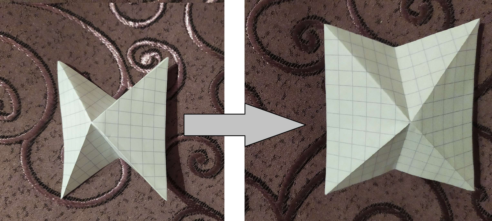
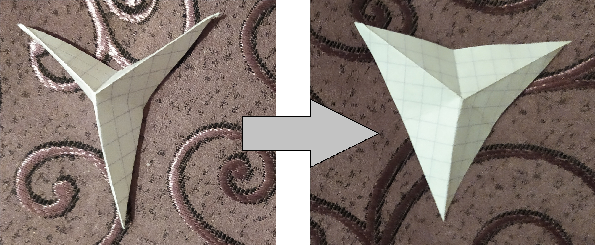
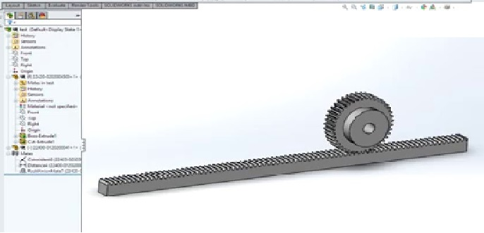

Concept
A creative way to save energy and cut AC expenses significantly. To take a step closer to implimenting green building in Egypt.
- Detect when sun is present and open up shads, but when its dark will close the shades
- Alert if there is a problem when closing or opening fails. Give feedback where the error is occuring.
- Able to be quantatative, can stack more shading to the system and will still work.
Material needed
- Paper
- Wood
- Light Sensor
- Servo motor
- PCB (to control the Servo motor
__________________________________________________________
Step 1 - Making of Oragami Shading Geometry
Option 1
Option 2
__________________________________________________________
Step 2 - 3D Opening/Closing Mechanism
In order for the oragami shades to open and close I will have to create a mechanism that takes rotary motion from the servo motor as input and generates a reciprocating output
Designs
If I will go ahead with the first option of the shading oragami. The best mechanism for this is a reciprocating rack and pinion mechanism. __________________________________________________________
Step 3 - Designing of 2D Wood Frame
__________________________________________________________
Step 4 - Building a Light Sensor
Materials Required
- 2x NPN Transistor
- LDR (photoresistor)
- 2x 1k Resistors
Circuit Diagram

__________________________________________________________
Step 5 - PCB servo Motor controller